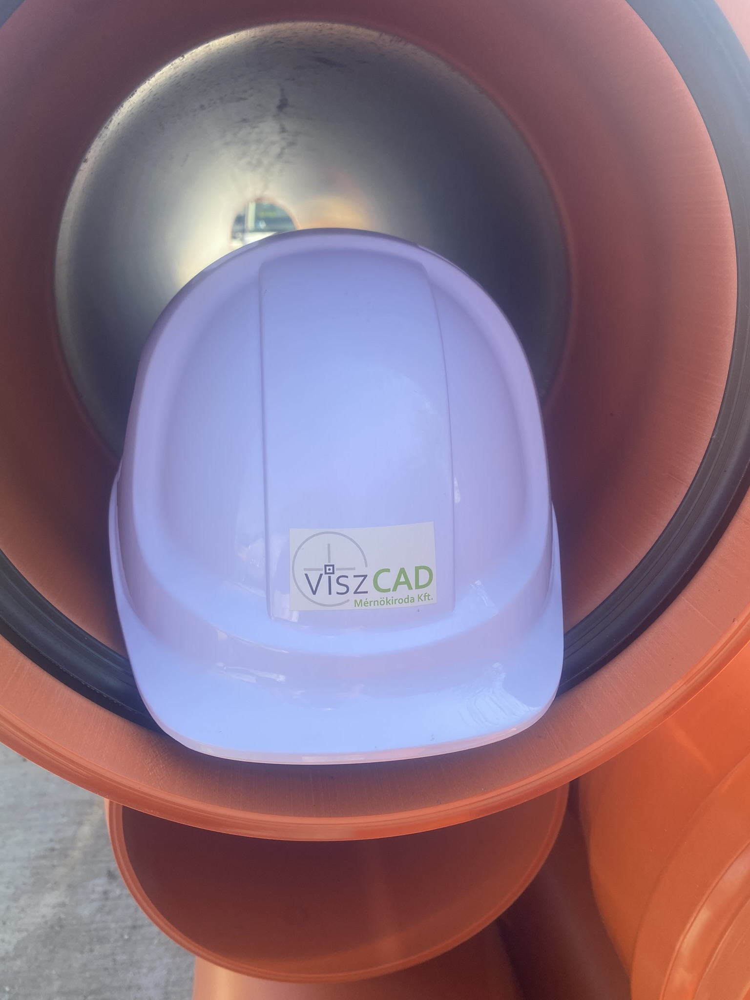
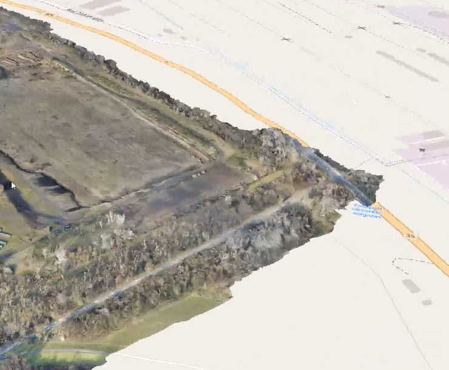
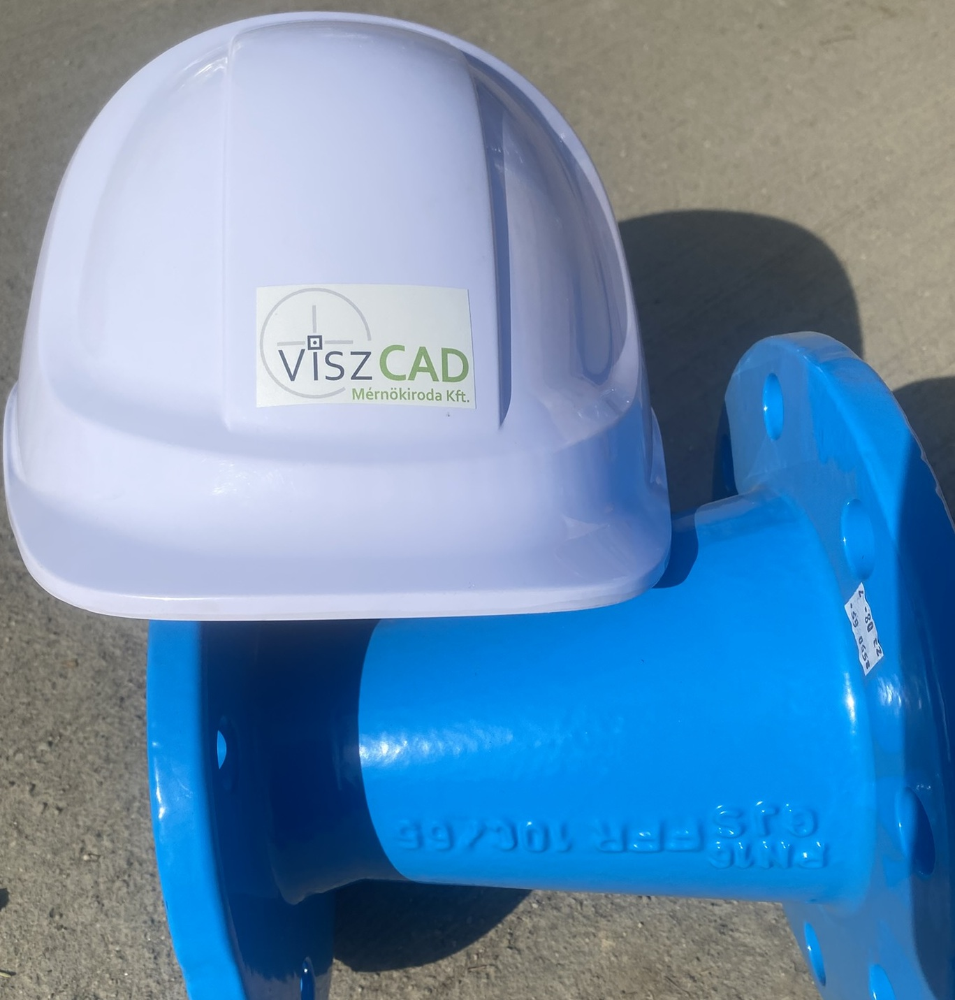

Minősített
Szakértelem
A ViszCAD Mérnökiroda vezető mérnökeiként személyes szakmai tapasztalatunk meghaladja a 30 évet. Ez az idő alatt számos önkormányzati, ipari és magán projekten dolgoztunk – olyan tudást és tapasztalatot szereztünk, amely az irodai tervektől a helyszíni kivitelezésig mindenhol megmutatkozik.
Több mint 1000 befejezett projekt tapasztalatát visszük minden új megbízásba. Ismerjük a hatósági elvárásokat, az anyagok tulajdonságait és a térség helyi adottságokat egyaránt.
- Mérnökök, tervezők és szakértők
- CAD és drón-technológia
- Folyamatos szakmai továbbfejlődés
Megbízhatóság
Ügyféleink visszatérnek hozzánk, mert tudják: amit vállalunk, azt teljesítjük. Az elmúlt évtizedekben egyetlen partnerünk sem maradt megoldás nélkül a megbeszélt határidőre.
A megbízhatóság nemcsak határidő tartást jelent. Azt is jelenti, hogy a munkáink pontosak, az engedélyek megszerzésre kerülnek, és a kivitelező – ha nem mi végezzük a munkát - nem fut problémákba a dokumentációk miatt.
- 100%-os határidő-teljesítési arány
- Transzparens kommunikáció
- Garanciális utókövetés
- Évtizedek óta nem változó telefonszámok!
Innováció
A mérnöki szakma folyamatosan fejlődik – mi nem maradunk le. Drón-alapú topográfiai felmérést alkalmazunk és fejlesztjük számítógépes állományunkat, így ma már 3D pontfelhő-technológiával dolgozunk.
- Drónos légifelvétel és 3D modellezés
Precizitás
Kis eltérés a geodéziai felmérésnél vagy nyomásszámítás hiba a vízhálózat tervén súlyos következményeket okozhat a kivitelezésnél. Nálunk ilyen nem fordulhat elő.
Minden tervet szakértői szemmel ellenőrzünk mielőtt a hatósághoz vagy az ügyfélhez kerül. A tervezések során a kivitelezői gyakorlat megvalósítható megoldások megadását vetíti előre.
- Hibamentes engedélyezési és kiviteli dokumentáció